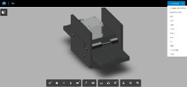
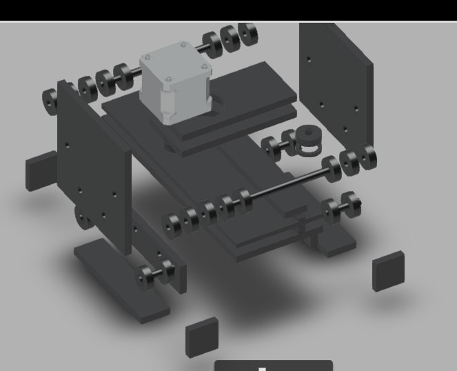
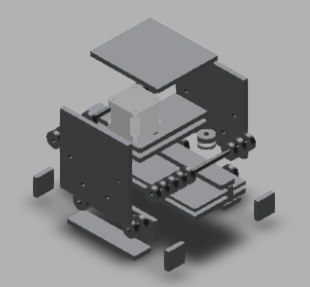
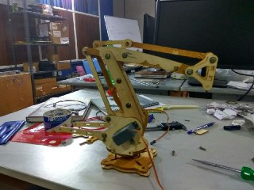
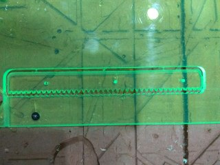
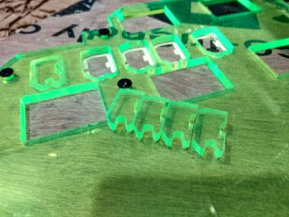
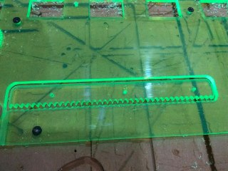

MECHANICAL DESIGN
For the Mechanical Design and Machine week, we plan to construct a Robotic arms that moves along a guide rail. The robotic Arm will have 4 degrees of freedom and move about a guide rail. We plan to test the concept of modular design - parts which connect together to make any parts you want all you have to do is change the end effector it can be a 3d printer, a lasercutter, milling machine. The guide rails functionality and robotic arm functionality can be integrated together. The robot should be capable of pick and place light weight objects.
The Arm is based on existing uArm. It is a miniature 4-axis parallel-mechanism robot arm, modeled after the ABB PalletPack IRB460 indutrial robot arm. It is made up of laser cut acrylic or wood parts, powered by standard RC hobby servos, and controlled by an Arduino-compatible board. The basic design is Arduino-controlled, using 4 servos, with 4 degrees of freedom. Three servos on the base control the main movement of the arm and the last servo on the top moves and rotates the object.
K Arm Group Documentation
Design of the Linear guide rails
I designed a Linear guide rail carraige for our K arm, I designed the rails design on Fusion 360.The imagees shown below are the screen shots of Rail design.



Assembling
After cutting the arm parts in laser cutter, assembled the parts with screws and other fastners.

rail test cut.


